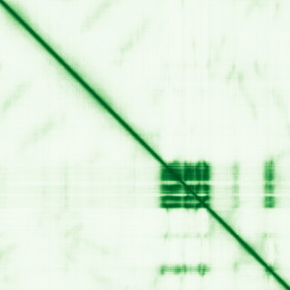

type: protein-evaluation gene: "CSNK2A2IP" date: 2026-05-31 tags: [protein-scout, nucleus-cytoplasm, evaluation] status: scored ---
CSNK2A2IP 核蛋白评估报告
1. 基本信息
| 项目 | 内容 |
|---|---|
| 基因名 / 别名 | CSNK2A2IP / CSNKA2IP |
| 蛋白全名 | Casein kinase II subunit alpha'-interacting protein |
| 蛋白大小 | 734 aa / 81.8 kDa |
| UniProt ID | A0A1B0GTH6 |
2. 评分总览
| 维度 | 得分 | 新权重 | 加权后 | 关键证据摘要 |
|---|---|---|---|---|
| 核定位特异性 | 4/10 | ×4 | 16.0 | UniProt Nucleus (ECO:0000250); GO nucleus IEA |
| 蛋白大小 | 3/10 | ×1 | 3.0 | 734 aa, 81.8 kDa，大蛋白 |
| 研究新颖性 | 10/10 | ×5 | 50.0 | Strict=0 |
| 三维结构 | 1/10 | ×3 | 3.0 | 无 PDB; pLDDT 44.7（极低，78.7% <50） |
| 调控结构域 | 2/10 | ×2 | 4.0 | IPR038954 (CSNKA2IP family)，无 Pfam 注释 |
| PPI 网络 | 1/10 | ×3 | 3.0 | STRING 404，IntAct 空，UniProt 空 |
| 加权总分 | 79/180** | |||
| 互证加分 | +0.0 | 核定位均为预测证据，无任何实验支持 | ||
| 归一化总分 (÷1.83) | 43.2/100** |
PubMed strict: 0
3. 详细分析
3.1 核定位证据
| 来源 | 定位 | 可信度 |
|---|---|---|
| UniProt | Nucleus (ECO:0000250) | 序列类比预测 |
| GO-CC | nucleus (IEA:UniProtKB-SubCell) | 电子注释预测 |
| HPA (IF) | 页面存在但无 IF 图像 | 无数据 |
HPA IF 状态: IF thumbnail only — HPA 暂无 IF 原图，仅获取到 60x60 缩略图，不能作为可靠定位证据。核定位基于 UniProt + GO-CC。
结论: CSNK2A2IP 核定位几乎完全无实验支持，仅凭序列类比和电子注释。预测可信度低。
3.2 结构与结构域
| 指标 | 数值 |
|---|---|
| AlphaFold | AF-A0A1B0GTH6-F1 |
| 平均 pLDDT | 44.7 |
| pLDDT >90 | 1.0% |
| pLDDT 70-90 | 11.2% |
| pLDDT 50-70 | 9.1% |
| pLDDT <50 | 78.7% |
| PDB | 无 |
| InterPro | IPR038954 |
| Pfam | 无 |

pLDDT 极低（均值 44.7），78.7% 残基 pLDDT <50，提示蛋白大部分区域为无序结构或 AlphaFold 预测不可靠。无 PDB 实验结构，无 Pfam 结构域注释。
3.3 研究现状
| 指标 | 数值 |
|---|---|
| PubMed strict (Title/Abstract) | 0 |
| PubMed broad | 0 |
| 别名 | CSNKA2IP（未用于 scoring） |
PubMed 中无任何以 CSNK2A2IP 或别名作为主题的文献记录，甚至连 broad 搜索也为 0。无论是在基因功能研究、疾病关联、蛋白互作方面，均无发表记录。
3.4 PPI 网络（三源综合）
| Partner | Source | Score/Evidence | Relevance |
|---|---|---|---|
| — | STRING | 404 Not Found | 无数据 |
| — | IntAct | 无记录 | 无数据 |
| — | UniProt | 无记录 | 无数据 |
三源 PPI 均为空：STRING 返回 404，IntAct 无任何互作记录，UniProt 无 curated 互作。尽管蛋白名暗示其可能为 CK2 alpha' (CSNK2A2) 互作蛋白，但此名称为序列类比推断，无实验验证。
4. 总体评价
CSNK2A2IP 是信息严重匮乏的候选蛋白，多项指标显示其不适合作为研究目标：(1) PubMed 文献记录为零；(2) AlphaFold pLDDT 均值仅 44.7，蛋白可能高度无序；(3) 无 PDB 结构、无 Pfam 结构域；(4) 全部 PPI 数据库均无记录；(5) 核定位仅为预测（ECO:0000250, IEA）。归一化总分 43.2/100 为最低档。除非后续出现文献突破或实验验证，不建议作为核-胞质候选投入资源。
5. 数据来源
- UniProt: https://www.uniprot.org/uniprotkb/A0A1B0GTH6
- AlphaFold: https://alphafold.ebi.ac.uk/entry/A0A1B0GTH6
- PubMed: https://pubmed.ncbi.nlm.nih.gov/?term=CSNK2A2IP（0 篇）
- Protein Atlas: https://www.proteinatlas.org/search/CSNK2A2IP（无 IF 图像）